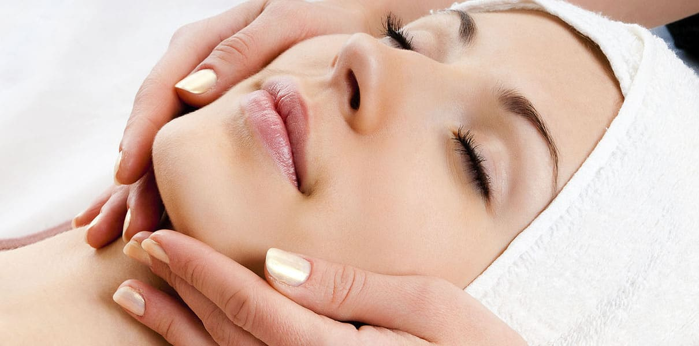
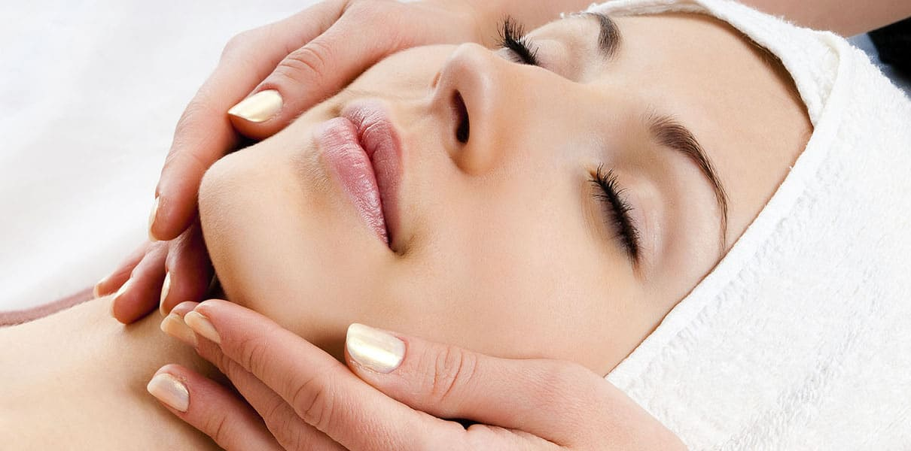
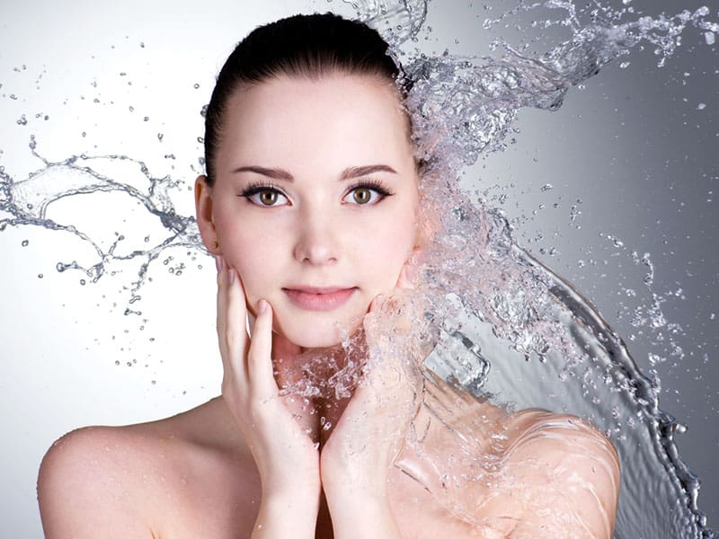
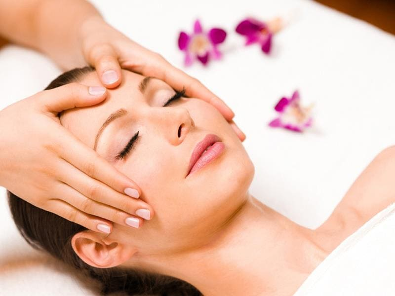
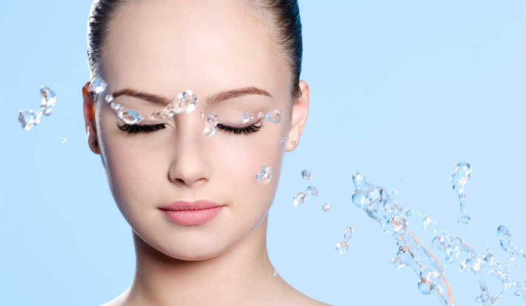
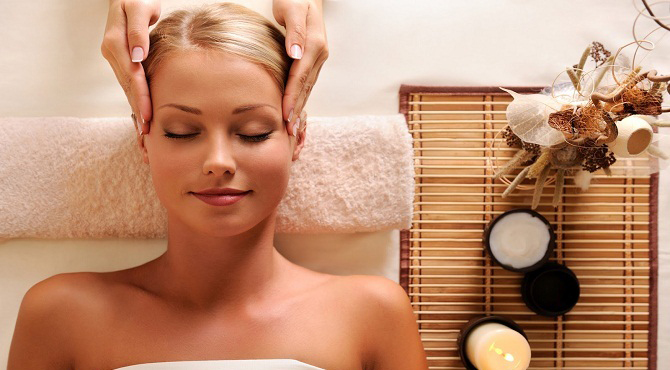
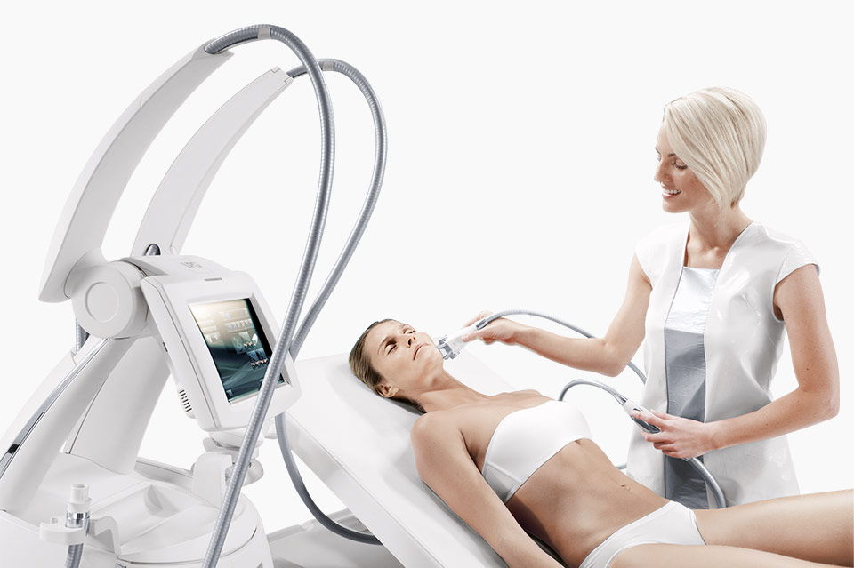
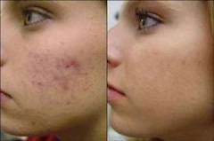
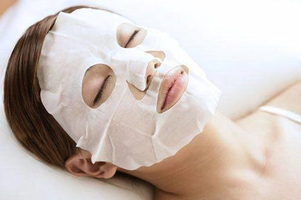
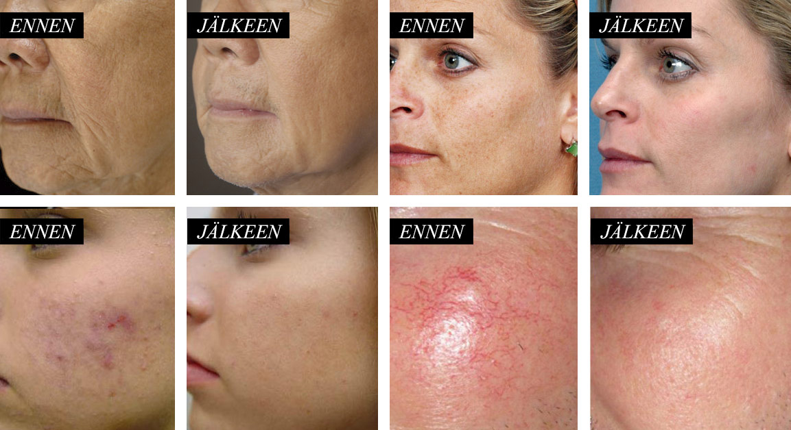

Peruskasvohoito
60 min — 55€
(Pintapuhdistus, kuorinta, kasvo-, hartia– ja decolteehieronta, naamio ja loppuvoiteet).
60 min — 55€
(Pintapuhdistus, kuorinta, kasvo-, hartia– ja decolteehieronta, naamio ja loppuvoiteet).
60 min — 45€
Kosteuttaa ja rauhoittaa ihosi, stimuloi solujen aineenvaihduntaa sekä estää ihon kuivumista. Tuloksena saat kauniin ja elastisen ihon, joka näyttää kuulaalta ja hyvinvoivalta.
60 min - 95€
Hoito sisältää: alkupuhdistus, ihoanalyysi, kuorinnan, ultraääni-syväpuhdistuksen, LPG siloitava ja kiinteyttävä liftmassage, ainutlaatuinen luonnollinen transdermaalinen Bio-naamio ihotyypin mukaan ja kosteuttava lifting loppuvoide.
Siloittaa ensimmäiset juonteet! Säilyttää ihosi luonnollisen ja nuorekkaan hehkun. Hoito pohjautuu merellisten kollageenimolekyylien samankaltaisuuteen ihon kanssa ja näiden ominaisuuksien ansiosta saadaan aikaan välittömästi silottava vaikutus.
Hoito tehdään miesten tuotteilla. Pintapuhdistus, kuorinta, höyrytys, mekaaninen ihonpuhdistus, hartia/ kasvohieronta, naamio ja loppuvoiteet.
Ainutlaatuinen kuorinta tasoittaa juonteita ja kasvonpiirteet kohoavat, erityinen ihon stimulointi aktiiviaineella sekä juonteisiin ja ihon liftaukseen keskittyvä hierontatekniikka. Kaksoisnaamion avulla täsmähoidetaan ongelma-alueita. Hyaluroni naamio kasvojen yläosalla häivyttää ja täyttää juonteet, sekä naamio kaulan ja kasvojen alueella täyttää syvimmät juonteet ja liftaa tehokkaasti.
60 min — KESÄTARJOUS! 45€ (norm.55€)
Nuorisoihonpuhdistus on suunnattu nuorille, joille on alkanut ilmaantua tukkeutumia ja mustapäitä. Kauneushoitolassamme on tehokkaita menetelmiä aknen vähentämiseen (Pintapuhdistus, kuorinta, höyrytys, mekaaninen ihonpuhdistus, naamio ja loppuvoiteet).
60 min — 85€
Kosteuttava kasvohoito kosteuttaa ja rauhoittaa ihosi, stimuloi solujen aineenvaihduntaa sekä estää ihon kuivumista. Tuloksena saat kauniin ja elastisen ihon, joka näyttää kuulaalta ja hyvinvoivalta. Kosteuttava kasvohoito sopii hienosti kaikille ihotyypeille.
60 min — 65€
Tehokas ja helävarainen ihon syväpuhdistus ja kuorinta.
Hoito sisältää: alkupuhdistuksen biogeelilla, laitekäsittelyn, naamion, loppuvoide.
Ultraäänipuhdistus tehdään laitteella, jonka ultraäänihoitopää ja hoitovoide yhdessä liuottavat ja pehmittävät huokosissa olevan talin, rasvan ja muut epäpuhtaudet kivutta ja ilman punoitusta. Se on hyvä vaihtoehto korvaamaan mekaanista puhdistusta herkemmälle iholle. Ultraäänilaite kuorii ihon pinnalta kuolleet sarveissolut jättäen ihon sametinpehmeäksi.
Esteet hoidon tekemiselle: sydämentahdistin, metalliset implantit, syöpä tai kasvaimet, pahalaatuinen ihomuutos tai haavat hoitoalueella, kilpisrauhashäiriöt (kaulan alueella), laskimotulehdus, raskaus.
Kasvot - 150€Kasvot ja kaula - 200€Kasvot, kaula ja dekoltee - 250€
Mikroneulaushoito on tehokas moneen tarkoitukseen. Erityisen hyvin Mikroneulaushoito toimii iholle, joka on veltostunut, väsynyt ja eloton. Myös mm. arpien, pigmenttimuutosten ja laajentuneiden ihohuokosten hoidossa olemme saaneet hyviä tuloksia sarjahoidolla. Atooppiselle iholle on saatu myös helpotusta Mikroneulaushoitojen avulla. Mikroneulaushoito tekee kymmeniätuhansia pieniä reikiä ihoon osuen verinahan puoliväliin. Tämä aiheuttaa sen, ettäiho alkaa tuottamaan itse sisältäpäin kollageenia enemmän. Kollageeni on proteiini, jota on paljon nuoren ihmisen kuulaassa ja täyteläisessä ihossa, jonka tuottaminen iän myötä hidastuu. Kollageeni-induktioterapia ei perustu kemiallisiin aineisiin, joten se voidaan tehdä myös kosmetiikan kemikaaleille herkistyneille. Mikroneulaushoidon avulla pystytään myös imeyttämään syvälle ihoon tehoaineita paremmin. Tehoseerumi valitaan aina hoidettavan ihon tarpeen mukaan. Mikroneulaushoito on hyvä aknen jälkihoitoon eli aknearville. Aknen on ensin parannuttava ja ihon on oltava terve. Ihossa ei saa olla tulehduksia hoitohetkellä. Ennen hoitoa halutessaan erillisestä maksusta voidaan puudutusvoiteella puuduttaa hoidettava ihoalue. Parhaimpaan tulokseen pääseminen edellytetään tiivistä sarjahoitoa jossa suositus on tietenkin tapauksesta ja hoidon indikaatiosta riippuen 3-6 hoitokertaa noin 1 kuukauden välein.
Kasvot 60 min - 95€ Kasvot ja kaula - 120€
Radiofrekvenssihoitojen etuna ihoa kiinteyttäviin laserhoitoihin verrattuna on lyhyt, alle puolen tunnin toipumisaika (hoito ei kuori ihon pintaa). Radiofrekvenssihoito myös vahvistaa ihonalaiskudosta laserhoitomenetelmiä syvemmältä. RF-hoitolaitteen teho perustuu energiaan, joka lämmittää ihon kaikkia kerroksia ja lisää ihon kollageenin muodostusta, joka on kiinteyden perusta ja toisaalta kutistaa kollageenia ja elastaanin tuotantoa, pintakapillaareja ja rasvasoluja, palauttaa ihon luonollisen tasapainon, parantaa lipolyysiä ja lymfanestekiertoa. Solukalvojen läpäisevyys paranee ja entsyymitoiminta aktivoituu. Lämpö parantaa verenkiertoa ja näin kuona-aineet poistuvat kudoksista paremmin. RF-lifting pyystyy hoitamaan: ryppyjä, laajentuneita ihohuokosia, tummia silmänalusia, kaksoisleukan poistamista, veltostunutta ihoa (kiinteTuloksena on tasaisempi ja kauniimpi iho. Iho "kutistuu" ja kiinteytyy, jonka seurauksena pienet rypyt ja poimut häviävät. Radiofrekvenssihoito on turvallista. Hoito on kivutonta ja se tuntuu pienenä lämpönä iholla. Hoitoa ei suositella raskaana oleville, vaikeaa yleissairautta, ihosairautta tai syöpää sairastaville. Parhaimman tuloksen saa sarjahoidolla; yleensä 1-2 kertaa viikossa n. 4-8 kerran sarjana.
60 min - 85€
Sis.: yleispuhdistus, kuorinta, mikrovirta, kasvohieronta, transdermalinen naamio ihotyypin mukaan, kasvolle ja silm.ymp lifting voiteet. Tehokkaasti liftaava hoito aikuiselle iholle. Stimuloi neste- ja verenkiertoa, lisää kudosten hapenottokykyä. Kiinteyttävä mikrovirtahoito kohottaa kasvonpiirteitä, silmäluomia ja kaulaa ja parantaa ihon kimmoisuutta, sekä väriä. Silottaa ryppyjä ja juonteita. Rentouttava, kivuton lifting hoito, jonka vaikutus on sarjahoitona silmin havaittava. - Kasvojen mikrohionta - kirkastaa, kuorii, elvyttää
60 min - 50€sarjahoito 5 krt - 230€sarjahoito 10 krt - 450€
(alkupuhdistus, kuorinta, LPG-hieronta laitella, ihotyypille sopiva transdermalinen terapeuttinen kuolleet mereltä naamio ja hoitovoide):
Liftmassage stimuloi dermistä (verinahkaa/ihoa) hellävaraisesti vahvistaen kollageeni- ja elastiinisäikeitä. Tuloksena kasvojen ja kaulan iho nuortuu huomattavasti. LPG:n Liftmassage vaikuttaa syvemmälle kuin mikään muu hoito, palauttaen luonnollisesti ihon elastisuuden ja kimmoisuuden.Lift tekniikka on kehitetty erityisesti kasvojen, kaulan ja dekoltee alueen herkälle iholle. Hoitopään läpät aktivoivat fibroplasteja (ihon soluja), jolloin kollageeni- ja sidekudossäikeet vahvistuvat. Iho kiinteytyy ja tasoittuu, ihosta tulee kimmoisa ja vahva, turvotus vähenee ja rypyt ja juonteet madaltuvat.
Sarjahoidon jälkeen tulos on nähtävissä välittomasti, vaikutus on pitkään kestävä ja pysyy ylläpitohoidolla. Jo yhden kuukauden hoitokuuri 2-3 kertaa viikossa saa näkyvät ja tuntuvat muutokset kasvojen alueelle. Liftmassage hoidolla nuorekas iho. Kaksoisleuan käsittelyyn erillinen, rullilla varustettu hoitomoduuli.Liftmassage tarjoaa välittömiä tuloksia: rentoutuneen, hehkeä ihon ja luonnollisen kohotuksen
- korjaa ihon rakennetta sisältä päin
- vahvistaa kollageeni- ja sidekudossäikeitä
- kiinteyttää
- madaltaa ryppyjä ja juonteita
- muotoilee kaksoisleukaa
- kaulan ryppyjen madallutus
Liftmassage sopii loistavasti myös miehille:
• Heleyttää ihoa
• Poistaa turvotusta
• Madaltaa juonteita ja ryppyjä
• Kiinteyttää
60 min - 65€
Sis.: alkupuhdistus, kuorinta ja syväpuhdistus timanttihionnalla, rauhoittava terapeuttinen naamio ihotyypin mukaan ja kosteusvoide. Timanttihionta on ihoa uudistava, epäpuhtauksia poistava, tasoittava ja ihoa kirkastava laitehoito. Se sopii lähes kaikille ihotyypeille. Hoito puhdistaa ihoa, tekee siitä sileämmän näköisen, kuorii sarveissolukkoa ja mahdollista hoitoaineiden paremman tehon. Sarjahoitona saadaan parhaimmat tulokset esim. 4- 6 hoitokertaa 1/vko. Jo ensimmäisen kerran jälkeen iho näyttää sileämmältä ja kirkkaammalta. Timanttihionta on - kuorittaa iholta kuollutta pintasolukkoa - pehmentää ihoa ja parantaa ihon tekstuuri - lisää ihon kimmoisuutta - silottaa juonteita - parantaa ihon sävyä - poistaa turvotusta kasvojen ja silmien ympärillä - poistaa lian huokosiin - tasoittaa akne arvet ja pigmenttimuutoksia - vetää kertynyt myrkkyjä ihon ja huokoset Jälkihoito-ohjeet: - Huomioitava ihon hyvä kosteutus ja laadukkaat kotihoitotuotteet, sillä iho menettää normaalia enemmän kosteutta tehokkaan kuorinnan jälkeen. - Hionnan jälkeen pitäisi välttää muutaman päivän ajan saunaa, hikoilua, aurinkoa, pakkasta ja solariumia. - Hoidon jälkeen saattaa ilmetä punoitusta, mikä on normaalia. Iho saattaa myös reagoida herkemmin muutaman päivän ajan. Timanttihionta menetelmää ei suositella, jos sinulla on: - erittäin herkkä ja erittäin couperaattinen iho - psoriaasi, herpes, syöpä - Roaccutan-lääkekuuri tai muu ihoon ja sen reagointiin vaikuttava lääkitys
60 min — 110€
Poistaa juonteiden ja ryppyjen, vaalentaa pigmentia, poistaa tummien silmänalusten ja aknen, kiinteyttä ihoa, poista raskausarpia ja silottaa appelsiini-ihon. Carboksi-terapiassa hiilidioksidi tunkeutuu syvälle ihon kerroksiin, kiihdyttää verenkiertoa, aktivoi aineenvaihduntaa, laajentaa verisuonia, poistaa kuona-aineita ja edistää proteiinisynteesiä. Carboksi-terapia auttaa poistamaan raskausarpia, selluliittia, aknea ja tulehduksia sekä parantavat ihon kiinteyttä, elastisuutta sekä kosteus-tasapainoa, silottaa ryppyjä ja juonteita, vaalentaa ihon pigmentaatio, kirkasta kasvojen väri. Iho hoidon jälkeen voi punoittaa, mutta se kestää vain noin puoli tuntia. Tehohoidon tulokset näkyvät iholla jo yhden hoitokerran jälkeen. Monissa raskausarpien ja selluliitin tapauksissa paranemista havaitaan jo 5 hoidon sarjalla. Jokainen tapaus on erilainen ja jotkin ihotyypit saattavat vaatia lisähoitoja halutun tavoitteen saavuttamiseksi. Raskausarpien osalta tulokset kestävät vuosia. Lihominen uudelleen tai uusi raskaus voi synnyttää uusia tai korostaa vanhoja raskausarpia. Selluliitin ja ryppyjen osalta ylläpitävä hoito pitäisi suorittaa 3 – 6 kuukauden välein riippuen ihon tilasta.
60 min — 110€
RYPPYJÄ POISTAVA KAUNEUDENHOITOLAITE HYÖDYT Aktivoi ihosoluja, parantaa allergioita, vahvistaa kehon vastustuskykyä, lievittää atooppista ihottumaa. Muuttaa haavan PH-arvoa edistäen epiteelin liikakasvua ja samalla estäen bakteerien pääsyn haavaan ja täten nopeuttaen haavan paranemista. TOIMINTAMEKANISMI Tämä laite käyttää happea ja vettä. Pieni tippa ravinteikasta nestettä levitetään iholle suihkeena. Neste menee läpi huokosista ja halkeilevasta ihosta tunkeutumalla ihon läpi verinahkaan, nopeuttaen ihosolujen uusiutumista ja poistaen likaa iholta. Näin laite pystyy nuorentamaan ihoa, poistamaan ryppyjä ja kohentamaan tumman keltaista ihoa. TOIMINNOT 1.Syväpuhdistus 2. Pigmentin poisto 3. Rasvaisen ihon hoito 4. Silmäpussien kohennus 5. Ihon rakenteen kohennus 6. Allergisen ihon hoito 7. Vesihoito iholle 8. Väsymyksen merkkien hälvennys 9. Hoito tummiin silmänalusiin 10. Tumman ja keltaisen ihon kohennus 11. Aknen ja arpeutumien poisto 12. Ryppyjen silottaminen silmien ja suun ympärillä 13. Kasvojen kohotus 14. Ihon vaalennus ja nuorentaminen
Happohoidot ovat erittäin tehokkaita menetelmiä erilaisten iho-ongelmien hoidossa. Kemiallisilla kuorinnoilla saadaan nopeita ja tehokkaita tuloksia vaikeisiinkin iho-ongelmiin. Happohoidoilla iho kirkastuu, elpyy ja nuorentuu. Tarkoituksena on paitsi uudistaa ja kosteuttaa, myös kiinteyttää ihoa.
- Poistaa kuollutta ihosolukkoa.
- Madaltaa juonteita ja ryppyjä.
- Poistaa akne.
- Poistaa pigmentaatio ja epätasainen ihonsävy.
- Silottaa ihon pintaa.
- Supistaa ihohuokosia.
- Uudistaa ja kosteuttaa ihoa.
- Kirkastaa ja nuorentaa ihoa.
- Kiinteyttää ihoa.
Pinnallinen happokuorinta hedelmähapoilla. Hoidon jälkeen ihon pinta on kirkastunut ja puhdas. Auttaa epäpuhtauksiin, laajentuneisiin ihohuokosiin ja pintakuivuuteen. Hoidon jälkeisenä päivänä voi jo meikata ja iho on kuulas ja hehkuva.
Glykolihapon vahvuus 20 %, 50 % tai 70 % valitaan ihon tilan ja hoidon tavoitteiden mukaisesti. Keskisyvä kuorinta, jossa 2 päivän toipumisaika, jonka jälkeen ihohuokoset ovat pienentyneet, pigmenttimuutokset tasoittuneet ja iho on kuulas ja pehmeä. Ei aiheuta hilseilyä erityisen kaksivaiheisen menetelmän ansiosta.
Ihon syvimpiin kerroksiin asti vaikuttava, voimakas happokuorinta. Madaltaa aknearpia, juonteita ja ryppyjä, pienentää ihohuokosia. Tehokkain happokuorinta. Iho uudistuu voimakkaasti ja hilseilee noin 2 viikkoa. Toipumisaika on 7 päivää, jolloin ollaan meikittä ja vältetään hikoilua ja ihon käsittelyä.
Mantelihappo molekyyli on 8 kertaa suurempi glykoli-, joten se tunkeutuu ihoon paljon hitaammin ja pysyy ylemmän orvaskeden merkittävästi pidempi.Siksi tämäntyyppiset kemikaaleilta pehmeä pinta . Mantelikuorinta sopii herkkä ja ohut iholle ja ei aiheuta sivuvaikutuksia.Mantelikuorinta voidaan tehdä keväällä ja kesällä. Mantelikuorinta ei tule käyttää, jos olet yliherkkä mantelihapon, jos iho on raikas, herpes elementtejä, monimutkaisia somaattisten sairauksien, raskaus. Mantelikuorinta puhdistaa, kosteuttaa ihoa, poistaa comedones, postacne, häivyttää tummia läiskiä, sileä juonteita. Kemiallisen kuorinnan jälkeen EI SAA: - ottaa aurinkoa tai käydä solariumissa (min. 2 viikkoa) - käyttää muita kuin suositeltuja ihonhoitotuotteita - käydä saunassa tai uimassa (2 – 3 päivään) - harrastaa intensiivistä liikuntaa, sillä hikoilu saattaa aiheuttaa iholle vesirakkuloita - poistaa mekaanisesti hilseilevää ihoa - tehdä karvanpoistoa eikä muita kosmeettisia tehohoitoja (7 päivän aikana) Sarjahoitosuositus: 4 - 6 kerran sarjana, 7-14 päivän välein, riippuen käytetyn hapon voimakkuudesta. Max. 2 sarjahoitoa vuodessa.
Aknen ja epäpuhtaan ihon hoidossa, poistaa kuolleen ihosolukon kasvoilta, vähentää mustapäitä ja kuivaa näppylöitä/finnejä. Salic – kuorinnalla voidaan hoitaa myös arpia ja sarjahoitona siitä on apua jopa ilmejuonteisiin. Kuorinta uudistaa ja heleyttää ihoa. Salisyylikuorintaa voidaan käyttää myös herkän ja punoitukseen taipuvan ihon pinnan uudistamiseen. Sarjahoitosuositus: 4 - 6 kerran sarjana, 7-14 päivän välein, riippuen käytetyn hapon voimakkuudesta. Max. 2 sarjahoitoa vuodessa.
Retinoiinihapon on mukana redox-prosesseja ja solujen aineenvaihduntaan stimuloimalla solut dermis, mikä lisää kollageenin ja elastiinin, stimuloi synteesiä lipidien epidermialnyh ja on bakterisidinen vaikutus ja komedonolitichesky.Lisäksi koostumus käsittää kojic kuorinta retinolia, askorbiinihappo, atselaiinihappo, fytiinihappo, joka auttaa poistamaan muodostumista hyperpigmentaatio ja parantaa toimintaa retinoiinihapon.Keltainen kuorii edistää solujen uusiutumista, stimuloi verenkiertoa dermis ja proteiinisynteesiä. Sitä voidaan käyttää kaikille ihotyypeille, myös herkkä, ohut ja milloin tahansa vuoden. Merkintöjen kuorinta keltainen: ehkäisy ikäntymisen, ryppyjä, acne, arvet Retinoli kuorinta ei tule käyttää: raskauden ja imetyksen aikana, ihotulehdus, herpes, maksasairaus, ruusufinnit, Retinoli tasoittaa ihon väriä ja vähentää pigmenttiläiskiä.
ihonhoitotuotteiden imeytyvyys ihoon paranee ja sen myötä myös tuotteiden tehokkuus voimistuu - kuolleet ihosolut poistuvat ihon pinnalta ja ihon uusiutuminen nopeutuu - ihosta tulee raikkaampi, sileämpi ja nuorekkaampi - ihon talineritys tasapainottuu ja erilaiset ihon epäpuhtaudet (finnit, mustapäät, talitukkeumat) vähenevät - ihon kosteuspitoisuus paranee ja pintakuivuudesta aiheutuvat juonteet vähenevät - kollageenin muodostuminen nopeutuu, jolloin ihon kimmoisuus paranee - pigmenttihäiriöt (maksaläiskät) vaalenevat ja ihon sävy paranee - kemiallisilla kuorinnoilla on myös antioksidanttinen (ikääntymisenvastainen) vaikutus ihoon
Kasvot — 180€
Elos (E-light) kiinteyttää ihoa, silottaa ryppyjä, parantaa ihon joustavuutta, häivyttää verisuonilaajentumia ja vaalentaa maksaläiskiä tehokkaasti ja turvallisesti. Elos-hoitoa käytetään myös lopulliseen karvapoistoon kaikenvärisille karvoille, ihon kiinteytykseen, ihon uudistamiseen.
Elos (E-light) -hoito yhdistää kahden energian vaikutuksen: valoimpulssin ja radiofrekvenssin. Tulos on huomattavasti aiempia menetelmiä tehokkaampi, ja hoito pystytään kohdistamaan tarkkaan valittuun kohteeseen hoitotavoitteesta riippuen.
E-style menetelmällä voidaan hoitaa myös vaikeita iho-ongelmia, esim. aknea.
Mitkä ongelmat voidaan ratkaista elos-terapialla?
- Ryppyjen tasoitus;
- Hoito kiristää ihoa (ei-invaasinen kasvojen kohotus);
- Kohottaa kasvojasi ja kaulaasi (kasvot voidaan kohottaa todella nopeasti);
- Kasvojen alueen ja kaulan alueen nuorentaminen;
- Erityyppisten pigmenttihäiriöiden, pienien verisuonien, venymisarpien ja pussittavan ihon parantaminen;
- Varttuneen ihon heleyttäminen ja ensimmäisten ikääntymisen merkkien ehkäisy.
Tässä on muutamia muutoksia, joihin voi varautua.
- Viiden hoidon sarjassa ihmiset, joilla on punertava iho, tulevat huomaamaan n. 60-70% parantumista ihonsävyssä.
- Katkeilleet verisuonet vähenevät n. 75%.
- Aurinkopilkut, maksaläiskät ja pisamat parantuvat n. 80-90%.
- Hienot juoneet silmien ja suun ympärillä häipyvät n. 40-60%.
- Syvät uurteet häivyttyvät n. 20-40%.
Yummy Beauty © 2017